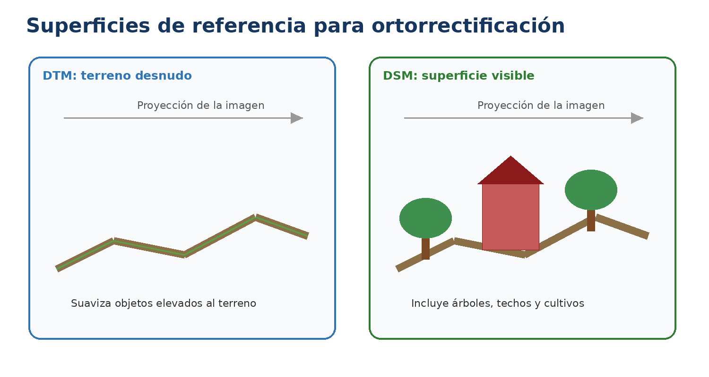
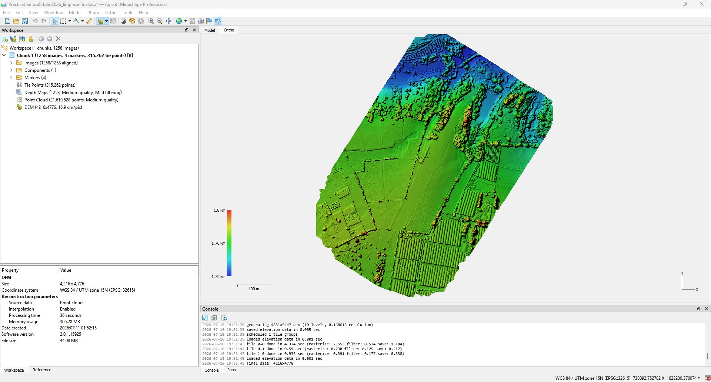
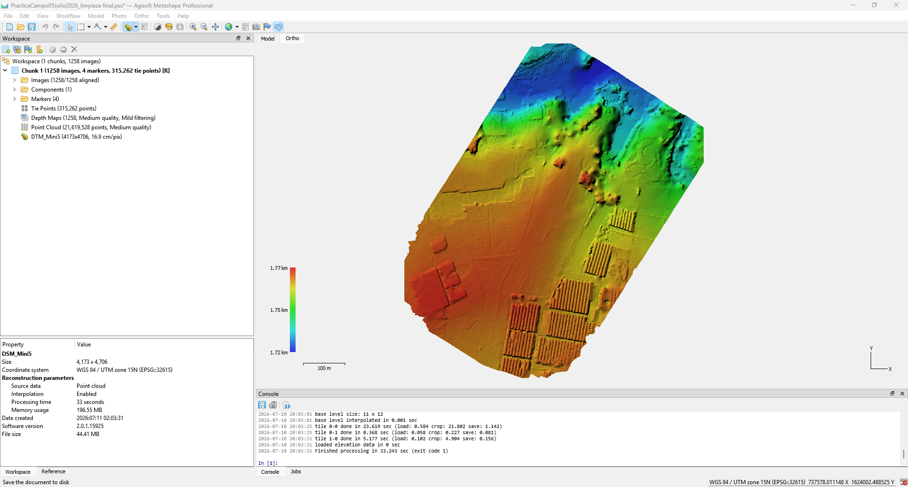

Qué se realizó en esta etapa
Se construyeron dos modelos de elevación en WGS 84 / UTM zona 15N: un DSM utilizando todas las clases de la nube y un DTM utilizando únicamente la clase Ground. Ambos productos se generaron con interpolación activada y resolución automática, permitiendo comparar la superficie visible con la aproximación al terreno desnudo.

Diferencia conceptual entre superficies.
DSM

DSM con todas las clases.
DTM

DTM generado solo con Ground.
Metashape reemplaza el DEM existente dentro del chunk. Para conservar ambos, duplicar el chunk o exportar cada producto antes de reconstruir.